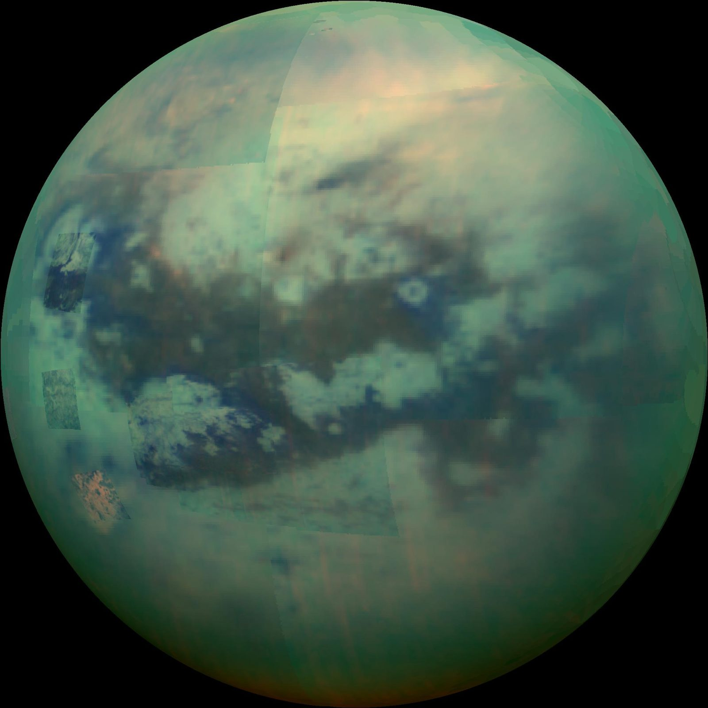
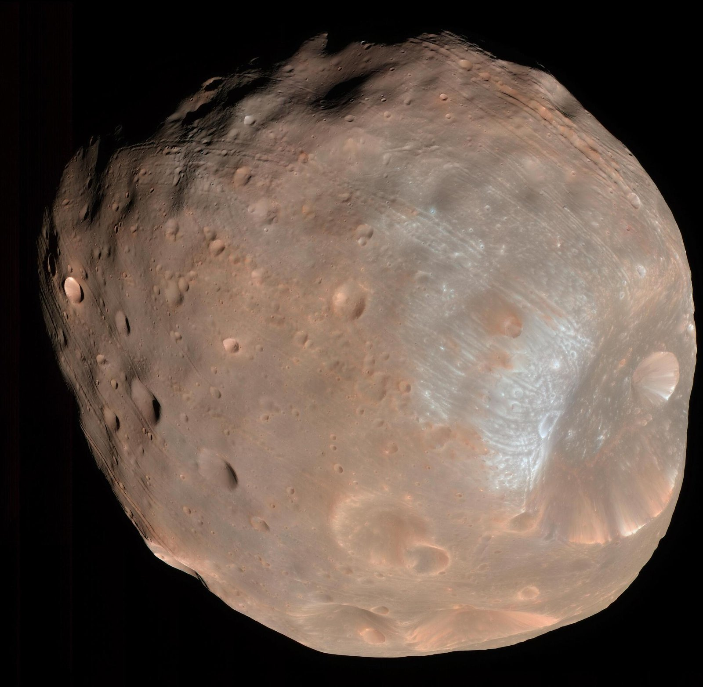
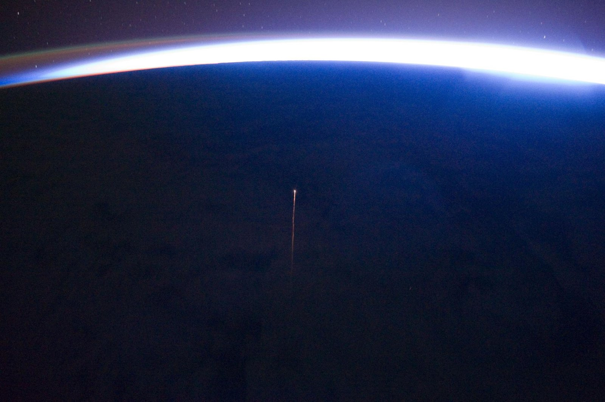
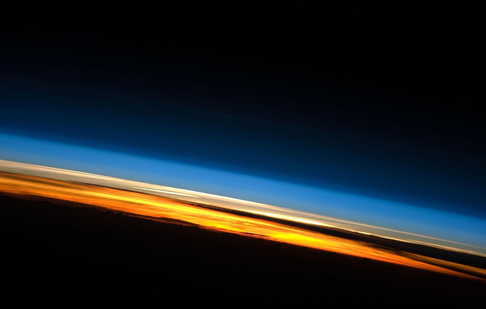

Natural debris and saving moons

Jupiter
The original debris remover. Jupiter's gravity swallows or flings away comets and asteroids, taking comet impacts roughly 2,000 times more often than Earth, with honest trade-offs for asteroids.

Saving moons: Titan
Saturn's hazy moon is a prebiotic time capsule. NASA's Dragonfly rotorcraft (launch period July 2028, arrival late 2034) will explore it, building the radar, long-life power and autonomy toolkit that also helps protect Earth.
What are Titan and Dragonfly's Five W's and impact statement?

Saving moons: MMX
JAXA's Martian Moons eXploration launches on H3 F10 on October 20, 2026 (JST) to land on Phobos and bring at least 10 grams home in 2031, the first sample return from the Mars system and a test of Earth–Mars round-trip technology.

Natural debris solution: Atmospheric Drag
Earth's upper atmosphere pulls low-orbit junk down to burn up, harder when the Sun is active. Below 600 km it works within years; above 1,000 km, not for a millennium. Jupiter's partner in natural cleanup.
What are the Atmospheric Drag Five W's and impact statement?

LeoLabs
A company running ground radars around the world to track satellites and debris in low orbit and warn operators of collisions (company figures).